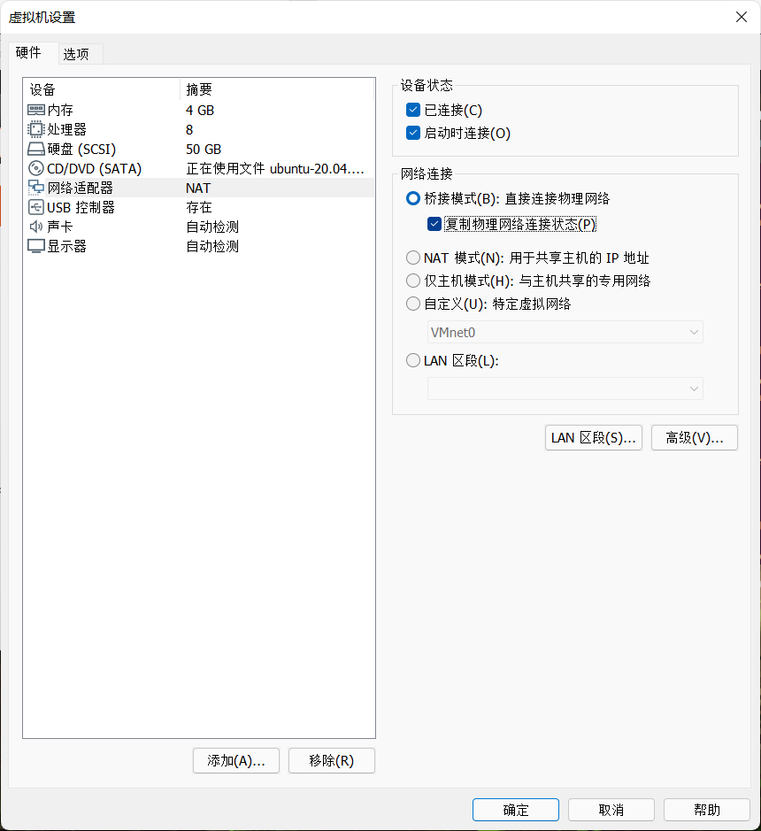
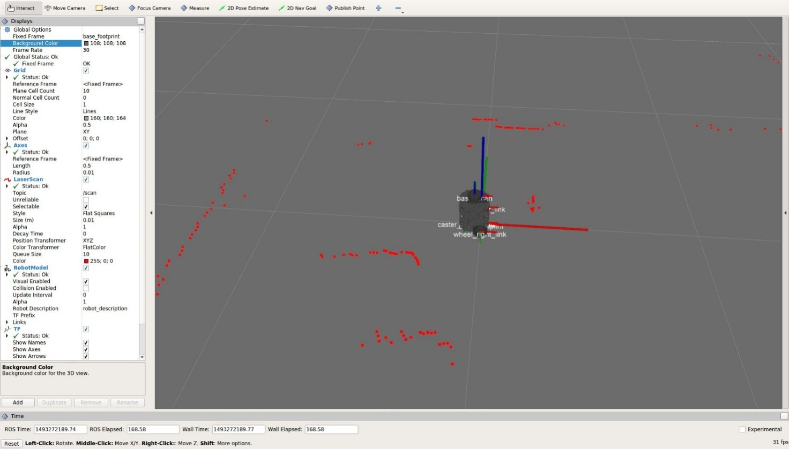

本章目标
在课程现场网络中连接 Ubuntu Noetic 控制环境，检查小车 ROS、scan/odom/TF 和 RViz，再用按住行驶、松开停车的低速窗口做短动。没有现场小车、授权或停车方式时，只阅读，不将 ping 或命令运行当作控制成功。
依赖：交付的 Ubuntu-A 控制机、预置 ~/robot_labs 和 ROS 1 Noetic Docker 环境。入口命令来自预置的 lab.sh。
准备与安全条件
Ubuntu 本地终端先进入 ~/robot_labs。控制机须桥接到当天实验 Wi-Fi；确认车辆归本组使用、一人看车、实体停车方式可用、没有其他遥控或导航程序发布速度。
操作步骤：连网、检查、短动、停车
确认课程套件可用
Ubuntu 本地终端 A运行
cd ~/robot_labs、bash lab.sh health。继续：显示
SOFTWARE_CHECK_PASS。失败时按套件指南处理，勿在现场临时下载。在 VMware 中把网卡设为现场桥接
Windows / VMware Workstation先在 Windows 连接课程现场 Wi-Fi，并将本虚拟机正常关机。打开 VMware Workstation，在左侧库中选中控制机，点“虚拟机 → 设置 → 网络适配器”。选“自定义：特定虚拟网络”，下拉框选 VMnet0；勾选“已连接”和“启动时连接”。
若 VMnet0 尚未绑定正确网卡，在 VMware 菜单点“编辑 → 虚拟网络编辑器”，选择 VMnet0，把“桥接到”从自动改为当前连接现场 Wi-Fi 的实体无线网卡，点“应用”。回到虚拟机设置，确认网络适配器仍指向 VMnet0。界面名称会随 Workstation 版本和语言设置变化；此图是课程教师任务书中的设置窗口示例，截图未注明 VMware 版本，不能据此确认版本号。
继续：VMnet0 已明确绑定当天实际使用的物理 WLAN，虚拟机网卡指向 VMnet0。配置完成仍不代表 Ubuntu 已取得现场地址。

教师任务书示例｜VMware 版本：截图未注明。图中选中的是“桥接模式”。本步骤选“自定义”并指定 VMnet0，实际绑定的物理网卡在虚拟网络编辑器中确认。 核对 Ubuntu 地址
Ubuntu 本地终端 A运行
ip -br -4 addr和ip -4 route，记录 Ubuntu 实际接口、IPv4 与路由。不可填 Windows 或 Docker 地址。继续：有符合现场网段的 Ubuntu 地址；没有就回 VMware/WLAN 检查。
填写当天小车配置
Ubuntu 本地终端 A首次配置时在套件目录运行
cp -n settings.env.example settings.env、nano settings.env，只填当天核实的ROBOT_IP、用户名与车型；不要存密码。继续：配置与本组实际使用的车辆相符，VM_IP 通常留空供套件按路由识别。已有正确配置不要覆盖。
检查到车路由和端口
Ubuntu 本地终端 A运行
bash lab.sh net。套件会显示到车路由，并检查 SSH 22 和 ROS master 11311。继续：目标地址正确、Ubuntu 源地址正确且所需端口可达。ping 或单端口可达本身不是传感器通过。
只读检查小车 ROS 状态
Ubuntu 本地终端 A运行
bash lab.sh doctor，查看已有 master、节点和驱动状态。继续：理解输出中的正常项与缺项；如另一组在使用或设备状态不明，停止，不运行准备操作。
仅在授权且确实缺驱动时准备
Ubuntu 本地终端 A只有只读检查确认 master/驱动缺失、且本组正在进行对应维护操作时，才运行
bash lab.sh prepare。按提示输入小车 SSH 密码，不是 Ubuntu 密码。继续：prepare 输出没有未处理错误；部分驱动、串口等异常时保留日志并停下，勿重复启动。
必要时先校时
Ubuntu 本地终端 A只有系统时间不一致且 SLAM/导航未启动时，运行
bash lab.sh sync-clock。不要在建图或导航运行时改时钟。继续：控制机和小车时间同步完成。无时间问题时不需执行。
检查传感器与时间戳
Ubuntu 本地终端 A运行
bash lab.sh check并等待约 20 秒完整输出。继续：必须看到
SENSOR_CHECK=PASS，且 scan、odom、TF 的接收年龄与 header 时间戳新鲜。只看计数增加不够；FAIL 就保存日志并停。打开实车可视化
Ubuntu 本地终端 A运行
bash lab.sh view，等待 RViz 显示模型与激光。继续：模型出现、激光随现场障碍变化。不要要求尚未建图时一定出现 map frame。

教师任务书示例｜先看模型和激光数据是否出现，再进入遥控环节。 打开实车 ROS shell
Ubuntu 本地终端 B另开窗口运行
cd ~/robot_labs、bash lab.sh shell。在新容器 shell 检查echo "$ROS_MASTER_URI"、echo "$ROS_IP"。继续：master 指向当天小车 11311，ROS_IP 是 Ubuntu 当前地址，不是 Docker 网段或 127.0.0.1。
核对节点、速度来源和传感器
实车容器 shell运行：
rosnode list rostopic info /cmd_vel rostopic echo -n 1 /scan/header rostopic echo -n 1 /odom/header rosrun tf tf_echo odom base_scan最后的 TF 命令持续输出，按 Ctrl+C 结束。
继续：scan/odom 有新样本，TF 正常，RViz 激光反映实景；记录 /cmd_vel 发布者与订阅者。
打开低速键盘窗口
Ubuntu 本地终端 C车前方空旷、看车者就位且速度源唯一时运行
cd ~/robot_labs、bash lab.sh teleop。继续：键盘窗口显示按键说明与等待状态。没有焦点时不要按键试车。
做一次极短方向检查
键盘控制窗口 / 看车者点击窗口取得焦点，按住 W 或 S 做极短动作，A/D 控制转向；松开按键、空格或 Esc 应发停车，Q 退出。不要按住不放观察很久。
继续：实车方向符合按键，松开后车停稳。若反向、加速异常、失联或传感器过期，立刻松键并用实体停车方式。
保存本轮观察
操作者 / 记录者记录操作者、当天网络、传感器检查输出、RViz、按键和停车观察，保存套件日志与现场短视频。
继续：区分发布命令与实测速度/距离；无仪器测量时不写精确值。
结束本地控制并确认停车
Ubuntu 本地终端退出键盘窗口后运行
cd ~/robot_labs、bash lab.sh stop。它停止本套件电脑端容器，不关闭小车 master 或驱动。收尾：看车者目视确认静止，再按现场安排处理电源；软件退出不等于小车已关机。
通过条件与留证
- 保存当天拓扑、接口/路由、master 与时间。
- 保存
SENSOR_CHECK完整输出、scan/odom/TF 和 RViz 动态画面。 - 记录操作者、按键和实际停车观察；命令值不是实测速度或制动距离。
- 保留失败轮原始输出；离线自检不算实车结果。
常见问题
- Ubuntu 无实验网地址：检查 VMware 桥接到当前 WLAN、网卡已连接和 VMnet0。
Unable to communicate with master：核对当天车址、11311 和小车 ROS；不要另起电脑 roscore 伪装 master。- scan 有话题但没新样本：查雷达驱动、源节点和时间戳，不要重开 RViz 代替修源端。
SENSOR_CHECK=FAIL：保存细节；检查两端时钟、接收年龄与 TF，不因计数增长继续。- 松键不停车：确认焦点、唯一速度发布者并立即实体停车；不要假定标准 TurtleBot3 键盘按键相同。
- 切 Wi-Fi 后断开：先停车，再核对新地址和路由，重新检查。
收尾
松键、目视确认停稳、关闭键盘，再运行本套件 bash lab.sh stop。小车端 master 和驱动按现场安排处理。保存日志与停车记录后再切换网络。
本章证据范围
主线使用课程 ROS 1 Noetic Docker 套件连接机器人现有 ROS 1 master；历史 ROS2 适配路线不与此步骤混写。话题可见、网络可达和离线自检都不能代替本轮真实传感器与停车证据。